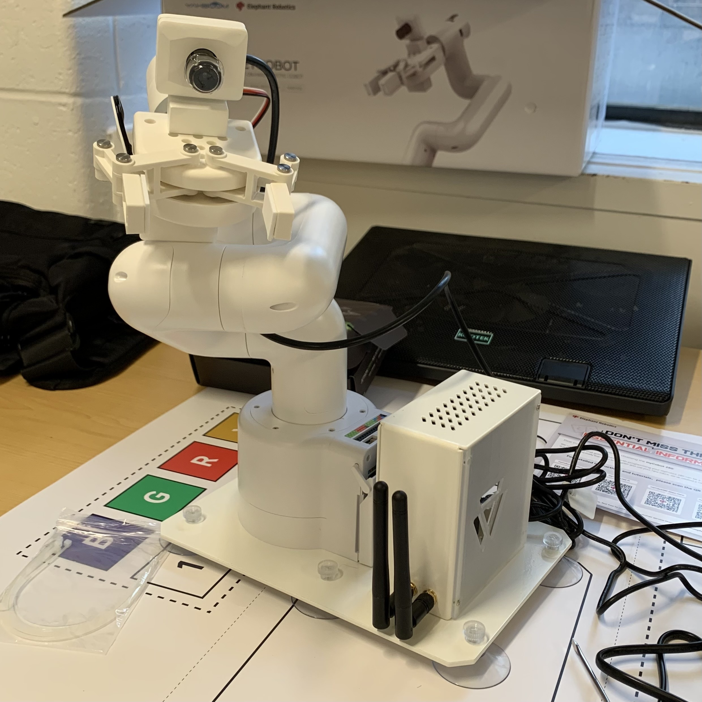
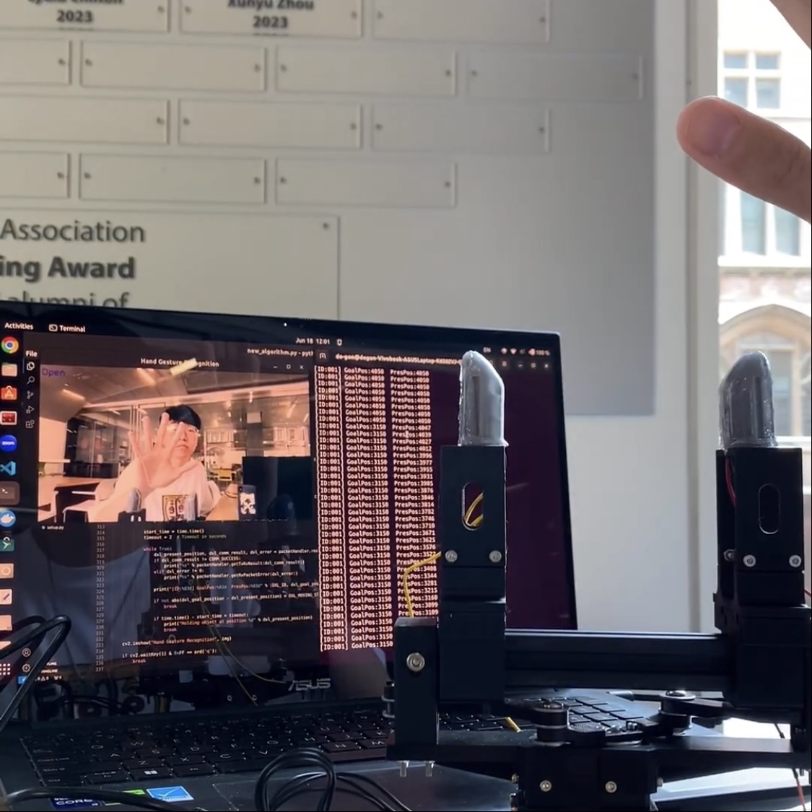
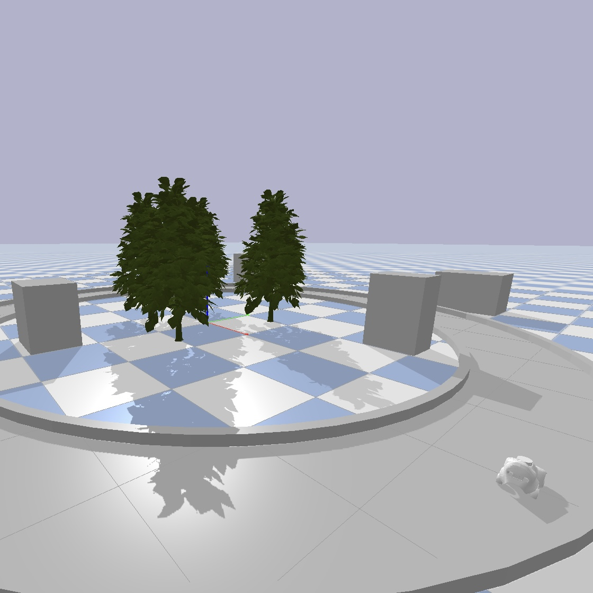
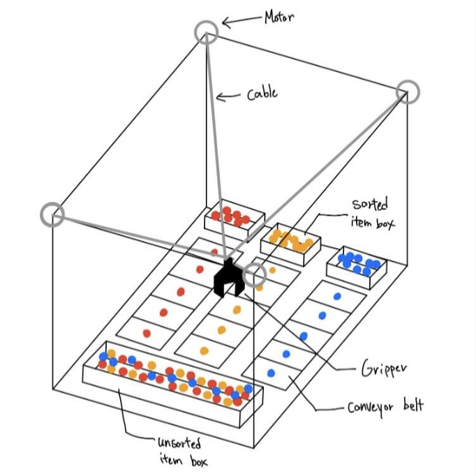
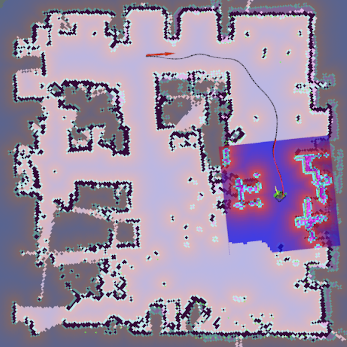
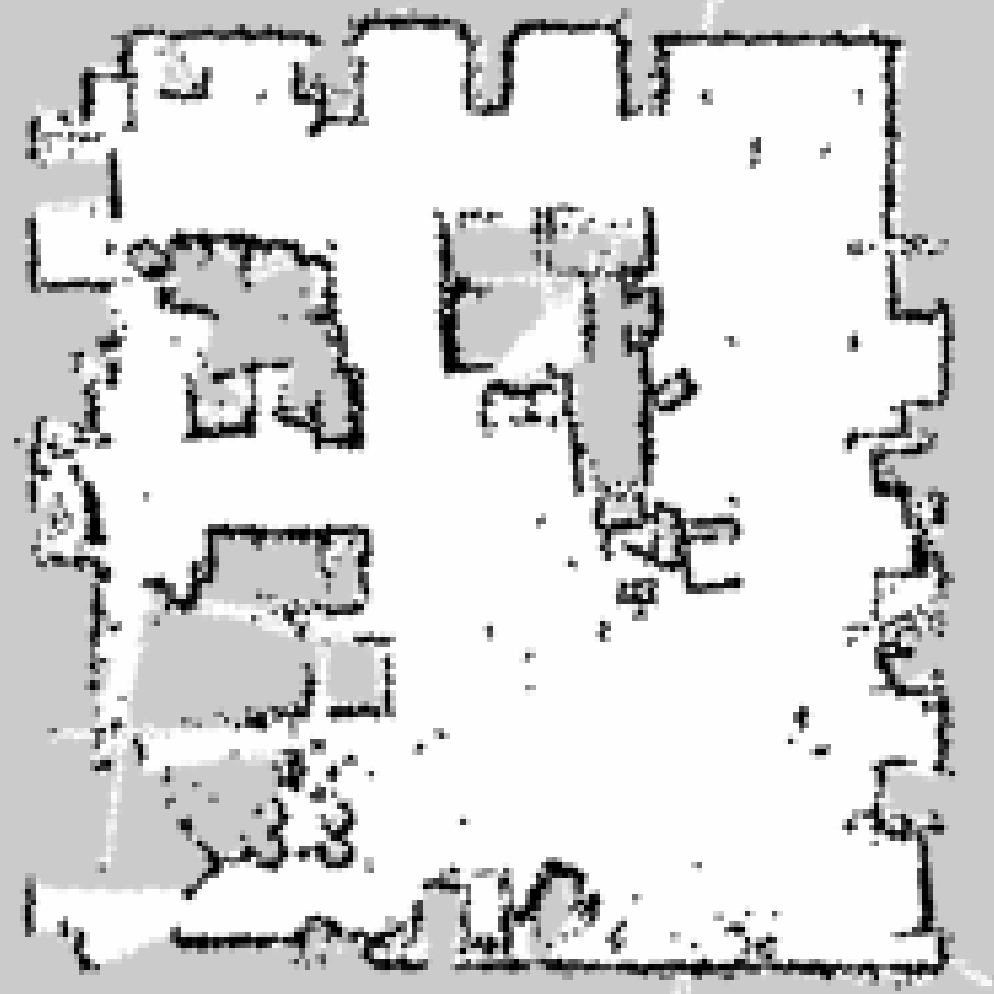
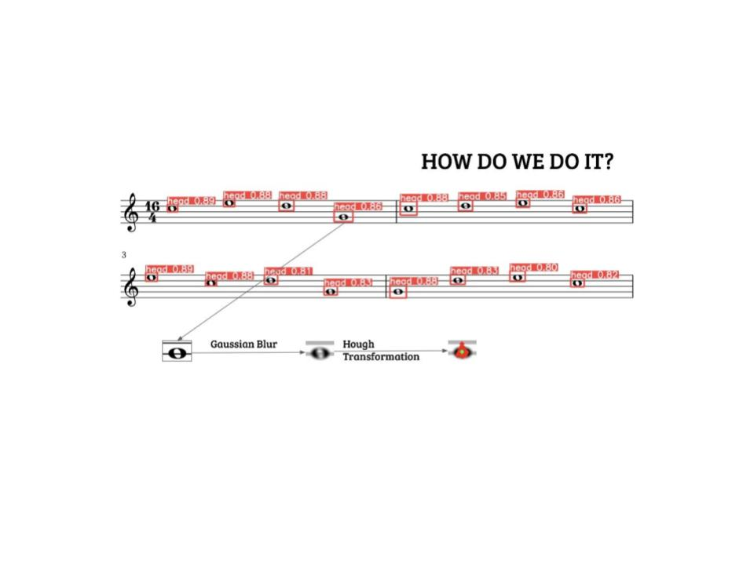

I recently completed my MS in Mechanical Engineering @ Columbia University. I researched in the ROAM Lab with Eric Chang as a graduate researcher, advised by Prof. Matei Ciocarlie, and in the Nonlinear Controls Research Group as a graduate researcher, advised by Prof. Homayoon Beigi. My past research can be categorized into three areas: Finger Design Integrated with Tactile Sensors, Signal Processing for Sensing, and Control Algorithm Development. I have explored the design of systems that mimic the multiple sensory receptors of human touch. Moving forward, I aim to explore the design of tactile fingers and control systems that emulate human touch and realize sensing capabilities beyond the limits of human perception. Furthermore, I seek to investigate how such biologically inspired systems can help robots better understand and interact with their environment.
Before joining Columbia, I received my Bachelor's degree in Mechanical Engineering @ New York University, where I worked in the Control/Robotics Research Lab (CRRL), advised by Prof. Farshad Khorrami, on autonomous navigation using SLAM algorithms.
[10-2025] Our work on SpikeATac is featured in The Wall Street Journal and IEEE Spectrum!
[10-2025] Presented paper & poster at IROS 2025
[10-2025] Presented poster with ROAMHand3 demo at NERC 2025
[7-2025] Gave a talk to Re'Generation Movement and high school students through the Jeju Special Self-Governing Province Office of Education’s “2025 Global University Exploration for High School Students”
[5-2025] Joined Nonlinear Controls Research Group
[5-2025] Graduated from Columbia University!
[5-2024] Joined ROAM Lab
[3-2024] Featured in New York Post article on NYC robot barista
[1-2024] Joined DitecT Lab
[9-2023] Started MS Program @ Columbia University
[1-2023] Graduated from New York University!
[6-2022] Joined CRR Lab
My current research focuses on tactile sensing, robotic manipulation, and control systems, aiming to develop robots that better understand and respond to the physical world.
Selected projects from academic courses and research labs.

PD Control on JetCobot
Research Project | Nonlinear Controls Research Group | Columbia University
Built a ROS 2 (C++) control framework for the JetCobot.

Hand Gesture-Based Robotic Gripper Control
Research Project | ROAM Lab | Columbia University
Built a vision-based control system for the parallel gripper for hands-free operation.

A Scaled-Down Smart City for Autonomous Vehicle Testing
Research Project | DitecT Lab | Columbia University
Designed simulation framework for autonomous vehicles to test algorithms without physical hardware. Developed a real-time ArUco marker detection system for AWS Deepracer.

Cable-Driven Parallel Robot with Adaptive Velocity Controller in Distribution Warehouse
Course Project | MECE E4602 Introduction to Robotics | Columbia University
Developed an adaptive velocity controller for a 4-cable-driven parallel robot, enabling dynamic speed adjustments based on the different objects. paper


Autonomous Navigation
Research Project | CRR Lab | New York University
Investigated the accuracy of a map created by gmapping, one of the Simultaneous Localization and Mapping (SLAM) algorithms, using the Turtlebot3 burger. abstract booklet

Sheet Music Sight-Reader
Course Project | ROB-UY 3203 Robot Vision | New York University
Created a Colab-based CV pipeline that takes in the image of a sheet of music and outputs a playable music file.
{kind=link}